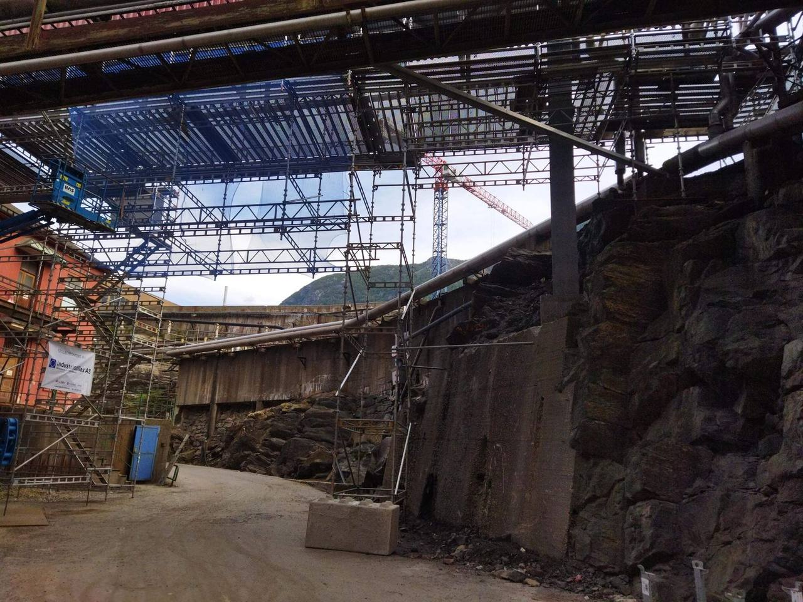

Tjeneste 01
Stillaset er arbeidsplassen.
Det skal stå fjellstøtt.
Industristillas AS sitt kjerneområde er stillasleveranser. Vi leverer stillaspersonell, stillasutstyr og gjennomfører stillasprosjekt — onshore og offshore.
Personell, utstyr eller hele jobben.
Noen kunder trenger bare folk. Andre trenger utstyr. De fleste vil at vi tar ansvar for hele leveransen, fra beregning til demontering.
- 01StillaspersonellAutoriserte stillasere med erfaring fra bygg, anlegg og industri. Vi stiller med lag eller enkeltpersoner.
- 02StillasutstyrHaki stillassystem, komponenter, trappetårn og tette stillaser. Utstyret er kontrollert og merket.
- 03Komplett prosjektBeregning, montering, kontroll og demontering — med dokumentasjon underveis.
- 04SpesialkonstruksjonerTelt over synkehull, stillas i skråninger og tette konstruksjoner der standardløsningen ikke passer.

Fire steg fra bestilling til demontering.
Vi tar mål og avklarer adkomst før vi sier noe om pris. Da holder tilbudet.
Steg 01
Befaring eller kart
Vi ser på bygg, terreng og adkomst — eller leser mål og bilder fra kunden.
Steg 02
Beregning og tilbud
Stillas-type, høyde, last, forankring og tidsbruk. Du får tilbudet skriftlig.
Steg 03
Montering
Lag på plass med egen HMS-gjennomgang før første stolpe reises.
Steg 04
Kontroll og overlevering
Merking, kontroll og signert overlevering. Du skal vite at det er trygt å ta i bruk.
Underveis
Endringer
Endrer behovet seg, justerer vi stillaset — eller bygger om. Vi sier fra om hva det koster.
Til slutt
Demontering
Vi rydder etter oss og leverer tilbake utstyret. Anlegget skal se ut som vi aldri har vært der.
Rengjøring og vedlikehold.
I tillegg til stillasleveranser tilbyr vi tjenester innen industriell rengjøring og vedlikehold. Flere av våre ansatte har riggerkompetanse og mekanisk erfaring, og kan bidra bredt til ulike oppdrag.
Det betyr at du slipper å koordinere tre leverandører for en jobb som egentlig henger sammen: stillaset, rengjøringen og det lille som må skrus fast.
